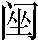

第十回 林教头风雪山神庙 陆虞候火烧草料场
诗曰：
自谓冥中5施计毒，谁知暗里有神扶。
最怜万死逃生地，真是瑰奇6伟丈夫。
话说当日林冲正闲走间，忽然背后人叫，回头看时，却认得是酒生儿78李小二。当初在东京时，多得林冲看顾。这李小二先前在东京时，不合9偷了店主人家财，被捉住了，要送官司问罪。却得林冲主张10陪话11，救了他免送官司，又与他陪了些钱财，方得脱免12。京中安不得身，又亏林冲赍发他盘缠，于路投奔人，不想今日却在这里撞见。林冲道：”小二哥，你如何也在这里？”李小二便拜道：”自从得恩人救济，赍发小人，一地里1314投奔人不着，迤逦15不想来到沧州，投托16一个酒店里，姓王，留小人在店中做过卖1718。因见小人勤谨19，安排的好菜蔬，调和的好汁水，来吃的人都喝采，以此买卖顺当20。主人家有个女儿，就招了小人做女婿。如今丈人丈母都死了，只剩得小人夫妻两个，权在营前开了个茶酒店。因讨钱过来，遇见恩人。恩人不知为何事在这里？”林冲指着脸上道：”我因恶了高太尉，生事21陷害，受了一场官司，刺配到这里。如今叫我管天王堂，未知久后22如何。不想今日到此遇见。”
李小二就请林冲到家里面坐定，叫妻子出来拜了恩人。两口儿欢喜道：”我夫妻二人正没个亲眷，今日得恩人到来，便是从天降下。”林冲道：”我是罪囚，恐怕玷辱你夫妻两个。”李小二道：”谁不知恩人大名，休恁地说。但有衣服，便拿来家里浆洗23缝补。”当时管待林冲酒食，至晚送回天王堂。次日，又来相请。因此，林冲得李小二家来往，不时间送汤送水来营里与林冲吃。林冲因见他两口儿恭勤24孝顺，常把些银两与他做本钱，不在话下。有诗为证：
才离寂寞神堂25路，又守萧条草料场。
李二夫妻能爱客，供茶送酒意偏长。
且把闲话休题，只说正话。迅速光阴，却早冬来。林冲的绵衣26裙袄，都是李小二浑家27整治28缝补。忽一日，李小二正在门前安排菜蔬下饭，只见一个人闪将进来，酒店里坐下，随后又一人入来。看时，前面那个人是军官打扮，后面这个走卒模样，跟着也来坐下。李小二入来问道：”要吃酒？”只见那个人将出一两银子与小二道：”且收放柜上，取三四瓶好酒来。客到时，果品酒馔29只顾将来，不必要问。”李小二道：”官人请甚客？”那人道：”烦你与我去营里请管营、差拨两个来说话。问时，你只说有个官人请说话，商议些事务。专等30，专等。”李小二应承31了，来到牢城里，先请了差拨，同到管营家里，请了管营，都到酒店里。只见那个官人和管营、差拨两个讲了礼。管营道：”素不相识，动问官人高姓大名？”那人道：”有书在此，少刻便知。且取酒来。”李小二连忙开了酒，一面铺下菜蔬果品酒馔。那人叫讨副劝盘32来，把了盏，相让坐了。小二独自一个，撺梭33也似伏侍不暇。那跟来的人讨了汤桶34，自行盪酒35。约计36吃过十数杯，再讨了按酒37，铺放桌上。只见那人说道：”我自有伴当38盪酒，不叫你休来。我等自要说话。”
李小二应了，自来门首39叫老婆道：”大姐，这两个人来的不尴尬4041。”老婆道：”怎么的不尴尬？”小二道：”这两个人语言声音是东京人，初时又不认得管营，向后42我将按酒入去，只听得差拨口里讷43出一句’高太尉’三个字来。这人莫不与林教头身上有些干碍44？我自在门前理会45，你且去阁子46背后，听说甚么。”老婆道：”你去营中寻林教头来，认他一认。”李小二道：”你不省得47，林教头是个性急的人，摸不着48便要杀人放火。倘或49叫的他来看了，正是前日说的甚么陆虞候，他肯便罢？做出事来，须连累了我和你。你只去听一听，再理会。”老婆道：”说的是。”便入去听了一个时辰，出来说道：”他那三四个交头接耳说话，正不听得说甚么。只见那一个军官模样的人，去伴当怀里取出一帕子物事，递与管营和差拨。帕子里面的莫不是金银？只听差拨口里说道：’都在我身上，好歹要结果了他性命。’“正说之间，阁子里叫：”将汤来。”李小二急去里面换汤时，看见管营手里拿着一封书。小二换了汤，添些下饭50。又吃了半个时辰，算还51了酒钱，管营、差拨先去了。次后，那两个低着头也去了。转背52没多时，只见林冲走将入店里来，说道：”小二哥，连日好买卖。”李小二慌忙道：”恩人请坐，小人却待正要寻恩人，有些要紧话说。”有诗为证：
潜为奸计害英雄，一线天53教把信通。
当下林冲问道：”甚么要紧的事？”小二哥请林冲到里面坐下，说道：”却才有个东京来的尴尬人56，在我这里请管营、差拨吃了半日酒。差拨口里讷出高太尉三个字来。小人心下疑，又着浑家听了一个时辰，他却交头接耳说话，都不听得。临了57，只见差拨口里应道：’都在我两个身上，好歹要结果了他。’那两个把一包金银递与管营、差拨，又吃一回酒，各自散了。不知甚么样人。小人心下疑，只怕恩人身上有些妨碍。”林冲道：”那人生得甚么模样？”李小二道：”五短身材，白净面皮，没甚髭须，约有三十馀岁。那跟的也不长大，紫棠色58面皮。”林冲听了大惊道：”这三十岁的正是陆虞候。那泼贱贼也敢来这里害我！休要撞着我，只教他骨肉为泥！”李小二道：”只要提防他便了，岂不闻古人言：吃饭防噎，走路防跌。”林冲大怒，离了李小二家，先去街上买把解腕尖刀59，带在身上，前街后巷60一地里去寻。李小二夫妻两个，捏着两把汗。
当晚无事，次日天明起来，早洗漱罢，带了刀又去沧州城里城外，小街夹巷61，团团62寻了一日。牢城营里都没动静。林冲又来对李小二道：”今日又无事。”小二道：”恩人，只愿如此。只是自放仔细便了。”林冲自回天王堂，过了一夜。街上寻了三五日，不见消耗6364，林冲也自心下65慢66了。到第六日，只见管营叫唤林冲到点视厅上，说道：”你来这里许多时，柴大官人面皮，不曾抬举的你。此间东门外十五里，有座大军草场，每月但是纳草67纳料的，有些常例钱68取觅69，原是一个老军70看管。我如今抬举你去替那老军来守天王堂，你在那里71几贯盘缠。你可和差拨便去那里交割。”林冲应道：”小人便去。”当时离了营中，径到李小二家，对他夫妻两个说道：”今日管营拨我去大军草场管事，却如何？”李小二道：”这个差使又好似72天王堂。那里收草料时，有些常例73钱钞74。往常不使钱时，不能勾这差使75。”林冲道：”却不害我，倒与我好差使，正不知何意？”李小二道：”恩人休要疑心，只要没事便好了。只是小人家离得远了，过几时那7677工夫来望恩人。”就时家里安排几杯酒，请林冲吃了。
话不絮烦，两个相别了。林冲自来天王堂，取了包裹，带了尖刀，拿了条花枪78，与差拨一同辞了管营，两个取路投草料场79来。正是严冬天气，彤云80密布，朔风81渐起，却早纷纷扬扬82卷下一天大雪来。那雪早下得密了。怎见得好雪？有《临江仙》词为证：
作阵成团空里下，这回忒杀83堪怜。剡溪84冻住子猷船85。玉龙鳞甲舞，江海尽平填。 宇宙楼台都压倒，长空86飘絮飞绵。三千世界玉相连。冰交河北岸，冻了十馀年。
大雪下的正紧，林冲和差拨两个在路上又没买酒吃处87，早来到草料场外。看时，一周遭有些黄土墙，两扇大门。推开看里面时，七八间草房88做着仓廒89，四下里都是马草堆90，中间两座草厅91。到那厅里，只见那老军在里面向火92。差拨说道：”管营差这个林冲来替你回天王堂看守，你可即便交割。”老军拿了钥匙，引着林冲，分付道：”仓廒内自有官司93封记94，这几堆草一堆堆都有数目。”老军都点见95了堆数，又引林冲到草厅上。老军收拾行李，临了57说道：”火盆、锅子、碗碟，都借与你。”林冲道：”天王堂内我也有在那里，你要便拿了去。”老军指壁上挂一个大葫芦，说道：”你若买酒吃时，只出草场，投东大路去三二里，便有市井96。”老军自和差拨回营里来。
只说林冲就床上放了包裹被卧97，就坐下生些焰火起来。屋边有一堆柴炭98，拿几块来生在地炉99里。仰面看那草屋时，四下里崩坏了，又被朔风吹撼100，摇振得动。林冲道：”这屋如何过得一冬？待雪晴了，去城中唤个泥水匠101来修理。”向了一回火，觉得身上寒冷，寻思：”却才老军所说五里路外有那市井，何不去沽些酒来吃？”便去包里取些碎银子，把花枪挑了酒葫芦，将火炭盖了，取毡笠子戴上，拿了钥匙，出来把草厅门拽上。出到大门首，把两扇草场门反拽上锁了，带了钥匙，信步投东。雪地里踏着碎琼乱玉102，迤逦背着北风而行。那雪正下得紧。
行不上半里多路，看见一所古庙。林冲顶礼103道：”神明庇佑，改日来烧钱纸104。”又行了一回，望见一簇人家。林冲住脚看时，见篱笆中挑着一个草帚105儿在露天里。林冲径到店里，主人道：”客人那里来？”林冲道：”你认得这个葫芦么？”主人看了道：”这葫芦是草料场老军的。”林冲道：”如何便认的？”店主道：”既是草料场看守大哥，且请少坐。天气寒冷，且酌106三杯权当接风107。”店家切一盘熟牛肉，盪一壶热酒，请林冲吃。又自买了些牛肉，又吃了数杯，就又买了一葫芦酒，包了那两块牛肉，留下碎银子，把花枪挑了酒葫芦，怀内揣了牛肉，叫声相扰，便出篱笆门，依旧迎着朔风回来。看那雪，到晚越下的紧了。古时有个书生，做了一个词，单题那贫苦的恨雪108：
广莫109严风110刮地，这雪儿下的正好。扯絮挦绵111，裁几片大如栲栳112。见林间竹屋茅茨113，争些114儿被他压倒。富室豪家115，却言道压瘴116犹嫌少。向的是兽炭117红炉118，穿的是绵衣絮袄119120。手捻梅花，唱道国家祥瑞121，不念贫民些小122。高卧123有幽人124，吟咏125多诗草126。
再说林冲踏着那瑞雪，迎着北风，飞也似奔到草场门口，开了锁，入内看时，只叫得苦。原来天理昭然127，佑护128善人义士129，因这场大雪，救了林冲的性命。那两间草厅已被雪压倒了。林冲寻思：”怎地好？”放下花枪、葫芦在雪里，恐怕火盆内有火炭延烧起来，搬开破壁子130，探半身入去摸时，火盆内火种都被雪水浸灭了。林冲把手床上摸时，只拽得一条絮被131。林冲钻将出来，见天色黑了，寻思：”又没打火处，怎生安排？”想起离了这半里路上，有个古庙，可以安身。”我且去那里宿一夜，等到天明却做理会45。”把被卷了，花枪挑着酒葫芦，依旧把门拽上锁了，望那庙里来。入的庙门，再把门掩上，傍边止有一块大石头，掇将过来，靠了门。入的里面看时，殿上做着一尊金甲山神，两边一个判官，一个小鬼，侧边堆着一堆纸。团团62看来，又没邻舍，又无庙主。林冲把枪和酒葫芦放在纸堆上，将那条絮被放开，先取下毡笠子，把身上雪都抖了，把上盖132133白布衫脱将下来，早有五分湿了，和毡笠放在供桌上，把被扯来盖了半截下身。却把葫芦冷酒提来便吃，就将怀中牛肉下酒。正吃时，只听得外面必必剥剥134地爆响。林冲跳起身来，就壁缝里看时，只见草料场里火起，刮刮杂杂135烧着。看那火时，但见：
一点灵台136，五行137造化138，丙丁139在世传流。无明140心内，灾祸起沧州。烹铁鼎能成万物，铸金丹还与重楼141。思今古，南方离位，荧惑142最为头143。绿窗144归焰烬，隔花深处，掩映钓渔舟145。鏖兵146赤壁，公瑾喜成谋。李晋王147醉存148馆驿149，田单150在即墨151驱牛。周褒姒152骊山153一笑，因此戏诸侯。
当时张见154草场内火起，四下里155烧着，林冲便拿枪，却待开门来救火，只听得前面有人说将话来。林冲就伏在庙听时，是三个人脚步声，且奔庙里来。用手推门，却被林冲靠住了，推也推不开。三人在庙檐下立地看火，数内一个道：”这条计好么？”一个应道：”端的亏管营、差拨两位用心。回到京师，禀过太尉，都保你二位做大官。这番张教头没的156推故157。”那人道：”林冲今番直吃158我们对付了，高衙内这病必然好了。”又一个道：”张教头那厮，三回五次托人情去说’你的女婿殁了’，张教头越不肯应承。因此衙内病患看看159重了，太尉特使俺两个央浼160二位干这件事，不想而今161完备162了。”又一个道：”小人直爬入墙里去，四下草堆上点了十来个火把，待走那里去！”那一个道：”这早晚163烧个八分过了。”又听一个道：”便逃得性命时，烧了大军草料场，也得个死罪。”又一个道：”我们回城里去罢。”一个道：”再看一看，拾得他一两块骨头回京，府里见太尉和衙内时，也道我们也能会干事。”
林冲听那三个人时，一个是差拨，一个是陆虞候，一个是富安。林冲道：”天可怜见林冲，若不是倒了草厅，我准定164被这厮们烧死了。”轻轻把石头掇开，挺着花枪，一手拽开庙门，大喝一声：”泼贼165那里去！”三个人急要走时，惊得呆了，正走不动。林冲举手肐察166的一枪，先戳倒差拨。陆虞候叫声：”饶命！”吓的慌了手脚，走不动。那富安走不到十来步，被林冲赶上，后心只一枪，又戳倒了。翻身回来，陆虞候却才行的三四步，林冲喝声道：”奸贼！你待那里去！”批胸167只一提，丢翻在雪地上，把枪搠在地里，用脚踏住胸脯，身边取出那口刀来，便去陆谦脸上阁168着，喝道：”泼贼！我自来169又和你无甚么冤仇，你如何这等170害我！正是杀人可恕，情理难容。”陆虞候告道：”不干小人事，太尉差遣，不敢不来。”林冲骂道：”奸贼，我与你自幼相交，今日倒来害我，怎不干你事！且吃我一刀。”把陆谦上身衣服扯开，把尖刀向心窝里只一剜171，七窍迸出血来，将心肝提在手里。回头看时，差拨正爬将起来要走。林冲按住喝道：”你这厮原来也恁的172歹！且吃我一刀。”又早把头割下来，挑在枪上。回来把富安、陆谦头都割下来，把尖刀插了，将三个人头发结做一处，提入庙里来，都摆在山神面前供桌上。再穿了白布衫，系了搭膊，把毡笠子带上，将葫芦里冷酒都吃尽了。被与葫芦都丢了不要，提了枪，便出庙门投东去。走不到三五里，早见近村人家都拿着水桶、钩子173来救火。林冲道：”你们快去救应174，我去报官了来。”提着枪只顾走。那雪越下的猛，但见：
凛凛175严凝176雾气昏，空中祥瑞降纷纷。须臾四野177难分路，顷刻千山不见痕。银世界，玉乾坤，望中178隐隐接昆仑。若还下到三更后，仿佛填平玉帝门。
林冲投东去了两个更次179，身上单寒180，当不过那冷。在雪地里看时，离的草场远了，只见前面疏林深处，树木交杂，远远地数间草屋，被雪压着，破壁缝里透出火光来。林冲径投那草屋来，推开门，只见那中间坐着一个老庄家181，周围坐着四五个小庄家向火，地炉里面焰焰地烧着柴火。林冲走到面前，叫道：”众位拜揖182。小人是牢城营差使人183，被雪打湿了衣裳，借此火烘一烘，望乞方便。”庄客道：”你自烘便了，何妨184得。”林冲烘着身上湿衣服，略有些干，只见火炭边煨着一个瓮儿，里面透出酒香。林冲便道：”小人身边有些碎银子，望烦185回些酒吃。”老庄客道：”我们每夜轮流看米囤186，如今四更，天气正冷，我们这几个吃尚且不勾，那得回与你。休要指望。”林冲又道：”胡乱只回三五碗，与小人荡寒187。”老庄家道：”你那人休缠188，休缠！”林冲闻得酒香，越要吃，说道：”没奈何，回些罢。”众庄客道：”好意着你烘衣裳向火，便来要酒吃。去便去，不去时将来吊在这里。”林冲怒道：”这厮们好无道理。”把手中枪看着块焰焰189着的火柴头，望老庄家脸上只一挑将起来，又把枪去火炉里只一搅，那老庄家的髭须焰焰的烧着。众庄客都跳将起来，林冲把枪杆乱打。老庄家先走了。庄家们都动掸不得，被林冲赶打一顿，都走了。林冲道：”都走了，老爷快活吃酒。”土炕上却有两个椰瓢190，取一个下来，倾那瓮酒来吃了一会，剩了一半，提了枪出门便走。一步高，一步低，踉踉跄跄捉脚不住，走不过一里路，被朔风一掉，随着那山涧191边倒了，那里挣得起来。凡醉人一倒，便起不得。醉倒在雪地上。
却说众庄客引了二十馀人，拖枪拽棒，都奔草屋下看时，不见了林冲。却寻着踪迹赶将来，只见倒在雪地里。庄客齐道：”你却倒在这里。”花枪丢在一边。众庄客一发上手，就地拿起林冲来，将一条索缚了，趁五更时分，把林冲解投192那个去处来。不是别处，有分教：蓼儿洼193内，前后摆数千只战舰艨艟194；水浒寨195中，左右列百十个英雄好汉。搅扰196得道君皇帝197，盘龙椅198上魂惊，丹凤楼199中胆裂。正是：说时杀气侵人冷，讲处悲风透骨寒。毕竟看林冲被庄客解投甚处来，且听下回分解。
读后感
本回十分解气。
林冲在天王堂碰到了之前的熟人——酒保李小二。李小二之前偷盗被抓，是林冲救了他才没坐牢。后来来到沧州，勤劳干活，娶了老婆，开了一家酒店。李小二夫妻将林冲视作大恩人，对他非常恭敬孝顺。林冲也经常资助他们钱财周转生意。双方成为好朋友。
一日，李小二店中来了一个军官，鬼鬼祟祟的见了牢城营的差拨和管营，三人商量着什么。李小二起了疑心，让妻子到阁子后去偷听，只听到“高太尉”和“要结果了他”。李小二赶紧告诉了林冲。林冲从李小二描述的外貌特征中知道是陆谦这个坏人，于是满城大街小巷去寻找，结果没有找到。渐渐的也就没放在心上。
几天后，管营让林冲到草料场去，这是比在天王堂还好的一个差事，平时可是要给钱才能得到的。为什么不害我，反而给我好处？林冲心中充满疑惑，但还是上路了。
到了草料场，和老兵交接了工作，到了晚上，林冲觉得天冷，就出去买酒吃，没想到回来时就发现自己的草屋已经被雪给压垮了，如果不是自己出去买酒，现在已经被压死了。林冲于是决定去旁边的古庙休息，没想到刚睡下，就听到外面爆响。只见草料场火光冲天。
林冲跑回去准备救火，却听到有人说话，原来是陆谦、富安、差拨三人以为自己毒计已成，林冲已被烧死，在自鸣得意，幻想高太尉会如何奖赏自己。林冲怒发冲冠，再也不心慈手软了，干脆利落解决掉三个败类，提枪逃走。
由于天冷，林冲在路途中找到了几间草屋，因为要吃酒驱寒，但老农不愿意，双方发生冲突，林冲将对方赶走了，自己独享了这些酒。然而走了没多久，就醉倒在山涧中。不久，老农带着几十人回来找到林冲将他绑缚了起来，不知道他们是不是就是梁山好汉？林冲就此因祸得福，逼上梁山？
AI读后感
《第十回 林教头风雪山神庙 陆虞候火烧草料场》
这一回看得我心情跌宕起伏。
林冲的善良和义气在他与李小二的关系中体现得淋漓尽致。他曾经救助李小二，让其免受牢狱之灾，而后双方建立起的深厚情谊令人感动。
当李小二察觉到可疑情况并告知林冲时，那种紧张的氛围一下子就弥漫开来。林冲得知是陆谦等人又来加害自己，愤怒地去寻找，却无果，让人感受到林冲内心的愤怒与无奈，同时也为后续的情节发展埋下了伏笔。他虽满心疑惑管营为何给自己一个看似不错的差事，但也只能接受安排前往草料场，尽管心中有疑虑，却也只能走一步看一步。
草料场的遭遇可谓惊心动魄。草屋被雪压垮，林冲侥幸逃过一劫，这一情节让人不禁为他捏一把汗。而当他发现草料场起火，又听到陆谦等人的对话时，林冲内心的愤怒终于彻底爆发。他不再忍耐，果断地杀死了这三个陷害他的人，这一情节大快人心，让人看到了林冲被逼到绝境后的反抗精神，他终于不再一味逆来顺受了，而是为了自己的生存和尊严而奋起反抗。
林冲在途中与老农等人的冲突以及他醉倒被绑缚的情节，又为故事增添了新的波折。这让我对他的未来命运充满了好奇和担忧，不知道他接下来会面临怎样的境遇，是否真的会如我所期待的那样因祸得福，走上梁山？
林冲的经历很典型，他从一个原本安分守己的教头，一步步被逼迫到不得不反抗的境地，让人对他的遭遇深感同情的同时，也对那个社会的不公和黑暗感到愤怒。
脚注
解释下面的脚注：
-
昭昭: 【zhāo zhāo】 1. 不安貌。 😄 2. 明快爽朗。 😄 3. 明亮。 😄 4. 明白；显著。 ↩
-
良图: 【liáng tú】 1. 妥善的谋划。 😄 2. 远大的谋略。 ↩
-
村酒: 【cūn jiǔ】 农家自酿的酒。 ↩
-
朽枯: (AI) 【xiǔ kū】腐朽、干枯。此处指如果不是因为风雪让林冲去沽村酒，他可能会被焚烧而变得腐朽干枯。 ↩
-
冥中: 【míng zhōng】 阴间，迷信谓人死后灵魂所在的地方。 ↩
-
瑰奇: 【guī qí】 1. 美好特出；珍奇。 😄 2. 指珍贵奇异之物。 ↩
-
酒生儿: 【jiǔ shēngr】旧时指卖酒的人或酒店的侍者。《水浒传》第一○回：「话说当日林冲正闲走间，忽然背后人叫，回头看时，却认得是酒生儿李小二。」也称为「酒博士」、「酒保」。 ↩
-
酒生儿——酒店里的伙计。 ↩
-
不合: 【bù hé】 1. 违背；不符合。 😄 2. 合不来；不和。 😄 3. 不应当；不该。 😄 4. 不停止； 无休止。 😄 5. 不能闭合。 ↩
-
主张: 【zhǔ zhāng】 1. 主宰；作主。 😄 2. 见解；主意。 😄 3. 提倡，扶持。 😄 4. 筹办。 😄 5. 引申为接济。 😄 6. 犹支撑。 ↩
-
陪话: 【péi huà】 陪话 [make a apoloy;apologize to sb.about] 赔不是,道歉 ↩
-
脱免: 【tuō miǎn】 1. 脱身免祸或免罪。 😄 2. 脱身免祸或免罪。 😄 3. 脱免，汉语词汇。拼音：tuō miǎn。释义：脱身免祸或免罪。 ↩
-
一地里: 【yī dì lǐ】 1. 犹一味。 😄 2. 到处。 😄 3. 一时之间。 😄 4. 背地里。 ↩
-
一地里——到处。 ↩
-
迤逦: 【yǐ lǐ】连续不断的样子。如：「远望天边迤逦的云山，足以开拓胸襟，涤尽尘俗之气。」 ↩
-
投托: 【tóu tuō】1.亦作”投托”。投靠托身。 2.投胎托生。 ↩
-
过卖: 【guò mài】 旧时酒饭馆里招呼食客的堂倌。 ↩
-
过卖——堂倌，酒食店里照料座儿的伙计。 ↩
-
勤谨: 【qín jin】 1. 勤劳，勤快。 😄 2. 勤劳谨慎。 ↩
-
顺当: 【shùn dang】 1. 顺利。 😄 2. 通顺确当。 ↩
-
生事: 【shēng shì】 生事 (1) [make trouble]∶制造麻烦;惹事非 我因恶了高太尉,生事陷害,受了一场官司,刺配到这里。——《水浒》第十四回 造谣生事 (2) [livelihood]∶指生计;境遇 生事若何? ↩
-
久后: 【jiǔ hòu】 1. 以后；将来。 😄 2. 久后，汉语词汇。拼音：jiǔ hòu。释义：以后；将来。 ↩
-
浆洗: 【jiāng xǐ】 洗净并浆挺衣物。 ↩
-
恭勤: 【gōng qín】 肃敬勤勉。 ↩
-
神堂: 【shén táng】 1. 供神的处所。 😄 2. 中医针灸穴位名。 ↩
-
绵衣: 【mián yī】1.亦作”绵衣”。 2.内装丝绵的衣服。 3.指装棉絮的衣服。绵，通”棉”。 ↩
-
浑家: 【hún jiā】 1. 全家。 😄 2. 妻子。旧时家中妻子主内，故称。 ↩
-
整治: 【zhěng zhì】 1. 严肃整齐；整齐而有秩序。 😄 2. 治理；整理。 😄 3. 办理。 😄 4. 处理；惩罚，使吃苦头。 ↩
-
酒馔: 【jiǔ zhuàn】 1. 犹酒食。 😄 2. 借指酒席。 ↩
-
专等: 【zhuān děng】 指专心的等候。 ↩
-
应承: 【yìng cheng】 1. 应允；承诺；承认。 😄 2. 照应。 ↩
-
劝盘: 【quàn pán】 劝酒时用来放酒杯的盘子。 ↩
-
撺梭: 【cuān suō】 犹穿梭。形容往来频繁。 ↩
-
汤桶: (AI) 【tāng tǒng】装汤的桶。跟来的人讨了汤桶自行盪酒。 ↩
-
盪酒: 【dàng jiǔ】暖酒。《初刻拍案惊奇》卷一八：「一把邀了那富翁，邀到一个大酒肆中，一个洁净席头上，坐了，叫酒保荡酒取嗄饭来。」 ↩
-
约计: 【yuē jì】 约略计算。 ↩
-
按酒: 【àn jiǔ】 1. 下酒；下酒物。 😄 2. 侑觴，劝酒。 ↩
-
伴当: 【bàn dāng】 1. 亦作“ 伴党 ”。亦作“ 伴儅 ”。 😄 2. 随从的差役或仆人。 😄 3. 伙伴，同伴。 ↩
-
门首: 【mén shǒu】 门前、门口。 ↩
-
不尴尬: 【bù gān gà】 1. 亦作’不魀’。 😄 2. 行为端正。 😄 3. 犹言尴尬。指行为鬼祟，神色态度不自然。不，助词，无义。 😄 4. 事情棘手，有麻烦，使人困窘。 ↩
-
不尴尬（ɡān ɡà）——对人而言，是指的鬼祟、不正派；对事而言，是指的有问题、有麻烦、叫人困窘。有时也写作”尴尬”、”不尴不尬”。 ↩
-
向后: 【xiàng hòu】 后面；以后；往后。 ↩
-
讷: 详细字义 【nè】 [形] (1) (会意。从言，从内。表示有话在肚里，难以说出来。本义:语言迟钝) 同本义。也作“呐” [slow (of speech)] ，言难也。——《说文》。按，当为呐之或体。 论物明辨谓之辩，反辩为。——《贾子道术》 君子欲于言而敏于行。——《论语·里仁》 广口少言。——《史记·李将军列传》 (2) 又如:口(言语迟钝;口齿笨拙);涩(言语艰难笨拙);直(言语迟钝，品格正直);钝(言语迟钝);言(言谈迟钝) 词性变化 【nè】 [动] (1) 结结巴巴地说 [stammer] 只听得差拨口里出一句“高太尉”三个字来。——《水浒全传》 (2) 忍而少言 [be hardhearted enough to talk rarely] 能威能怀，能辨能。——三国 魏· 刘劭《人物志·体别》 © 汉典 ↩
-
干碍: 【gān ài】 同“干礙”，妨碍；关涉。 ↩
-
理会: 【lǐ huì】 1. 注意；过问（多用于否定）。 😄 2. 照料；处理（多见于早期白话）。 😄 3. 评理；争论是非（多见于旧小说、戏曲）。 😄 4. 懂得；明白。 😄 5. 理睬；过问（多用于否定式）。 ↩ ↩2
-
阁子: 【gé zi】 1. 酒楼、茶楼等特设的小房间。 😄 2. 泛指小室。 😄 3. 指迎神赛会时用的神龛。 ↩
-
省得: 【shěng de】 省得 (1) [avoid]∶避免发生某种情况;以免 你就住在这儿吧,省得天天来回跑 (2) [remember]∶亦作“省的”。记得,知道 连讨命的做了事,也不省得。——《初刻拍案惊奇》 ↩
-
摸不着: 【mō bù zháo】 1. 指经过探寻而仍不能了解。 😄 2. 指料不定、弄不好。 ↩
-
倘或: 【tǎng huò】 假如；如果。 ↩
-
下饭: 【xià fàn】 1. 佐餐。 😄 2. 犹下食。端上饭菜；准备食物。 😄 3. 谓适宜用来佐餐。 😄 4. 指菜肴。 ↩
-
算还: (AI) 【suàn huán】算账后归还。几人吃完后算还了酒钱。 ↩
-
转背: 【zhuǎn bèi】 1. 转身。喻时间的短促。 😄 2. 离开。 😄 3. 转身。比喻极短的时间。 😄 4. 在计算机科学中，抽象化（英语：Abstraction）是将数据与程序，以它的语义来呈现出它的外观，但是隐藏起它的实现细节。抽象化是用来减少程序的复杂度，使得程序员可以专注在处理少数重要的部份。一个电脑系统可以分区成几个抽象层（Abstraction layer），使得程序员可以将它们分开处理。 ↩
-
一线天: 【yī xiàn tiān】 1. 一线天空。 😄 2. 洞窟中或两崖之间仅可见一缕天光者。如浙江金华北山、雁荡山合掌峰，杭州西湖飞来峰等处皆有，且甚著名。线，亦作“綫”。 😄 3. 一种自然气象景观。 ↩
-
亏杀: 【kuī shā】1.犹多亏﹐幸亏。 2.犹难为。 ↩
-
回护: 【huí hù】 1. 袒护、庇护。 😄 2. 指辩护。 😄 3. 回避，避忌。 😄 4. 匡护，救助保护。 😄 5. 回环保护。 ↩
-
尴尬人: (AI) 【gān gà rén】行为让人觉得可疑、不正常的人。此处指那两个东京来的人，李小二觉得他们不尴尬，怀疑他们可能与林冲身上有些干碍。 ↩
-
紫棠色: 【无拼音信息】 紫棠色，黑里带红的颜色。《水浒传》第四十八回:“那哥哥七尺以上身材,紫棠色面皮,腰细膀阔。” ↩
-
解腕尖刀: 【jiě wàn jiān dāo】 日常应用的小佩刀。一般尖长，背厚，刃薄，柄短。 ↩
-
前街后巷: 【qián jiē hòu xiàng】 指各处的街巷。 ↩
-
小街夹巷: (AI) 【xiǎo jiē jiā xiàng】小街道和狭窄的巷子。林冲在沧州城里城外，小街夹巷团团寻了一日。 ↩
-
团团: 【tuán tuán】 1. 圆貌。 😄 2. 引申为肥胖。 😄 3. 指圆月。 😄 4. 簇聚貌。 😄 5. 围绕、旋转貌。 😄 6. 犹慱慱。忧苦不安貌。 😄 7. 全部；到处。 😄 8. 犹层层。 😄 9. 球状物。 😄 10. 团团，指圆貌。引申为肥胖。见宋 王安石 《黄菊有至性》诗：“团团城上日，秋至少光辉。” ↩ ↩2
-
消耗: 【xiāo hào】 1. （物质或精力等）因使用或受损失而减少。 😄 2. 使消耗。 😄 3. 音信（多见于早期白话）。 ↩
-
消耗——这里指音信。”消”是消息，”耗”是音耗。 ↩
-
心下: 【xīn xià】 1. 心里，心中。 😄 2. 中医学指膈下胃脘的部位。注“心下，胃之上脘也。” ↩
-
慢: 【màn】 详细字义 màn 〈〉 (1) (形声。从心，曼声。本义:轻;对人无礼貌) (2) 同本义[despise;look down on] ，一曰不畏也。——《文》 ，惰也。——《广雅》 我远而之。——《左传·襄公三十一年》 可敬不可。——《礼记·缁衣》 而长不简矣。——《吕氏春秋·处方》 君使民，乱将矣。——《左传·庄公八年》 敬贤者存，贤者亡。——《荀·君》 荆成王焉。——《吕氏春秋·上德》 其若彼之甚也;见贤人若此其肃也。——《庄·则阳》 管家，实是多了你。——《儒林外史》 (3) 又如:骂(信口乱骂);亵(;招不周);狎(轻侮);视(轻视);公(怠忽公务);令(轻上司的命令);心(轻之心) (4) 怠 [slight;cold-shoulder] 责攸之、 伟、 允等之。—— 诸葛亮《出师表》 (5) 又如:客(怠客人) (6) 放纵;无节制 [indulge]。如:散(不严肃;不整齐);泄(轻浮);淫(浪荡遨游) (7) 通“谩”。欺骗 [deceive;hoodwink] 田驷东 齐侯，南欺 荆王。——《韩非·林上》 (8) 通“墁”。涂抹 [plaster] 郢人垩其鼻端。——《庄·徐无鬼》 词变 màn [形] (1) 懒惰 [idle;lazy] ，惰也。——《文》 政宽则民，则纠之以猛。——《左传·昭公二十年》 啴谐易。——《礼记·乐记》 (2) 又如:憧(懈怠摇);志(怠懈的心智);官(闲散的官职) (3) 不及时，迟了 [late;tardy] 不及时日，渴葬也;不及时而不日，葬也。——《公羊传·隐公三年》 (4) 从引申为缓 [slow] 叔马忌，叔发罕异。——《诗·郑风·大叔于田》 轻拢捻抹复挑。——白居易《琵琶》 (5) 又如:交(地;不着急);礼(;，不慌不忙的样);板(戏曲中缓的曲调);(缓;犹言缓一缓);节奏(乐曲中的缓节 …… 更多请点击：https://www.zdic.net/hans/%E6%85%A2 ↩
-
纳草: (AI) 【nà cǎo】缴纳草料。大军草场每月有纳草纳料的事务。 ↩
-
常例钱: 【cháng lì qián】 按惯例送的钱。旧时官员、吏役向人勒索的名目之一。 ↩
-
取觅: (AI) 【qǔ mì】收取、获取。大军草场有些常例钱取觅。 ↩
-
老军: 【lǎo jūn】 年老的兵卒。 ↩
-
（chuài）——挣。 ↩
-
好似: 【hǎo sì】 1. 好像；犹如。 😄 2. 胜过。 ↩
-
常例: 【cháng lì】 1. 常规；惯例。 😄 2. “常例钱”的略称。 ↩
-
钱钞: 【qián chāo】 1. 泛指钱财。 😄 2. 指钱币。 ↩
-
差使: 【chāi shǐ】 1. 指官职，职务。 😄 2. 差遣；派遣。 😄 3. 犹差事。被派遣去做的事情。 ↩
-
那: 【nànǎnèinā】 详细字义 nā [名] (1) 姓 (2) 另见 nà;nè;nèi;nuó 基本词义 nà 〈代〉 (1) (形声。小篆字形从邑冄( rǎn)声。邑与地名或行政区域有关。后省作“”。①本义:国名。《说文》:“西夷国。”本读 nuó。②指示代词。特指某人、某时间、某地方或某事物。一定是远指之词如“件事你我心都清楚。”) (2) 指示代词 [that] (3) 指代较远的人或事物。如:厮(家伙表示鄙视的意思);山坡上有一穿红衣服的姑娘是他的未婚妻 (4) 指代较远的时间、处所 时使吾。——清· 林觉民《与妻书》 (5) 又如:昝(咱。时);从以后我再没见过她;厢();头(极;尽头);哈() (6) 指较远的人或事物。如:这时两同学都在屋她独自在窗前站 (7) 指较远的时间、处所。如:和天交界的地方有一红红的摇动的灯光… (8) 指前文提到的或根据上下文或根据当时的情况显然所指的某人或物 [the]。如:把只猫赶出去 (9) 表示突出强调某人、事物或语意 [that there]。如:我决投家伙票的 (10) 表示赞同之 [there]。如:是你的光荣 词性变化 nà 〈连〉 (1) 表示顺上文或上句话的语意申说应有的结果 [in that case]。如:我再等了 (2) 另见 nā;nè;nèi;nuó 基本词义 nè 〈代〉 (1) [口]∶根据情况所指的、提到的或认为的人、物或意思;一 [that]——“”( nà )的口语音。如:人可怎 (2) 另见 nà;nā;nèi;nuó 基本词义 nuó [形] (1) [much;many] 戢难受福。——《诗·小雅·桑扈》 (2) 安闲的子 [peaceful and carefree] 王在在镐有其居。——《诗·小雅·鱼藻》 (3) 美 [fine] 使富都竖赞焉。——《国语 …… 更多请点击：https://www.zdic.net/hans/%E9%82%A3 ↩
-
那——这里同”挪”，作抽、移等解释。 ↩
-
花枪: 【huā qiāng】 1. 旧式兵器，像矛而较短。 😄 2. 比喻欺诈狡猾的手法。 ↩
-
草料场: 【cǎo liào chǎng】 堆藏军马和其他牲口饲料的地方。 ↩
-
彤云: 【tóng yún】 1. 红云，彩云。 😄 2. 指下雪前密布的浓云。 ↩
-
朔风: 【shuò fēng】 1. 指北方的音乐。 😄 2. 北风，寒风。 ↩
-
纷纷扬扬: 【fēn fēn yáng yáng】 形容雪、花、叶等多而杂乱地飘洒。形容杂乱地传扬；议论纷纷。 ↩
-
忒杀: 【tè shā】 忒杀，汉语词语，指太甚、过于。 ↩
-
剡溪: 【shàn xī】 水名。曹娥江的上游。在浙江省嵊州市南。 ↩
-
子猷船: (AI) 【zǐ yóu chuán】用王子猷雪夜访戴的典故。此处“剡溪冻住子猷船”是说雪大得像冻住了王子猷乘坐的船一样。 ↩
-
长空: 【cháng kōng】 指天空。天空辽阔无垠，故称。 ↩
-
吃处: (AI) 【chī chù】吃饭的地方。大雪下得正紧，林冲和差拨两个在路上又没买酒吃处。 ↩
-
草房: 【cǎo fáng】 用茅草、稻草或其他干草盖的房子。 ↩
-
仓廒: 【cāng áo】 1. 见”倉廒”。 😄 2. 亦做“仓敖”，亦做“仓廒”。储藏粮食的住所。 ↩
-
马草堆: (AI) 【mǎ cǎo duī】堆放马草的堆。推开草料场大门，看到四下里都是马草堆。 ↩
-
草厅: 【cǎo tīng】 草屋的厅堂。亦常指前厅。 ↩
-
向火: 【xiàng huǒ】 烤火。 ↩
-
官司: 【guān si】 1. 普通官吏；百官。 😄 2. 官府。多指政府的主管部门。 😄 3. 指官府里摊派的赋税劳役之类的公事。 😄 4. 指诉讼。 😄 5. 引申为不同意见的争论。 😄 6. 方言。谓不耐烦不高兴的神色。 ↩
-
封记: 【fēng jì】 封缄标记。 ↩
-
点见: 【diǎn jiàn】 点清。 ↩
-
市井: 【shì jǐng】 市井 (1) [marketplace]∶买卖商品的场所 处商必就市井。——《管子·小匡》 你若买酒吃时,只出草料场投东大路去,三二里便有市井。——《水浒传》 (2) [street]∶街市 市井无赖 臣乃市井鼓刀屠者。——《史记·魏公子列传》 (3) [businessman]∶指商贾 然市井之子孙,亦不得仕官为吏。——《史记·平准书》 ↩
-
被卧: 【bèi wo】 睡眠用的被子。 ↩
-
柴炭: 【chái tàn】 木炭。 ↩
-
地炉: 【无拼音信息】 地炉，拼音dì lú，汉语词语，意思是大地陶冶万物的神炉；就地挖砌的火炉；火炕，地炕；亦作”地炉”。 ↩
-
吹撼: (AI) 【chuī hàn】吹动、摇撼。屋被朔风吹撼，摇振得动。 ↩
-
泥水匠: 【ní shuǐ jiàng】 瓦匠，建筑工人。 ↩
-
碎琼乱玉: 【suì qióng luàn yù】 指雪花。 ↩
-
顶礼: 【dǐng lǐ】 1. 双膝下跪，两手伏地，以头顶尊者之足，是佛教徒最崇敬的礼节。 😄 2. 敬礼，致敬。 😄 3. 鞠躬。 😄 4. 朝拜，瞻仰。 😄 5. 崇拜，敬佩。 ↩
-
钱纸: 【qián zhǐ】 即纸钱。一种迷信用品。供祭鬼神时焚化用。 ↩
-
草帚: (AI) 【cǎo zhǒu】用草做的扫帚。林冲看见篱笆中挑着一个草帚儿在露天里。 ↩
-
酌: 【zhuó】 详细字义 zhuó [动] (1) (形声。从酉( yǒu)，从勺，勺亦声。从“酉”与酒有关。本义:斟酒) (2) 同本义 [pour out liquor] ，盛酒行觞也。——《说文》 尸升，坐取爵。——《仪礼·有司彻》。 酒曰清。——《礼记·曲礼》 缩用茅。——《礼记·郊特牲》 盖之也。——《公羊传·僖公八年》 及祭，仆。——《周礼·夏官》 引壶觞以自。——晋· 陶渊明《归去来兮辞》 因命互举。——唐· 李朝威《柳毅传》 以我油知之。——宋· 欧阳修《归田录》 以钱覆其口，徐以杓油沥之。——欧阳修《卖油翁》 无多我，我乃酒狂。——《汉书·盖宽饶传》 (3) 又如:献(斟酒以献;酒献客;酒祭神);羽(酒。羽，羽觞之省，代指酒);言(酒。言，助词);醴(酒) (4) 饮酒 [drink] 花间一壶酒，独无相亲。——李白《月下独》 引壶觞以自，眄庭柯以怡颜。——陶潜《归去来辞》 (5) 又如:别(饮酒告别);杯(饮酒);鲁(饮薄酒);霞(比喻饮美酒) (6) 斟，择善而行 [weigh and consider] 今昔而之。——清· 洪亮吉《治平篇》 (7) 又如:议(斟商议);责(责罚);从(顺从);古御今(择古之善者以为治今的借鉴);古准今(择取古代之事，用来比照今天的况);估(估计);度(;度) (8) 舀取 [ladle out] 以杓油沥之。——宋· 欧阳修《归田录》 (9) 又如:饮(挹取流质食物而饮);取(挹取，舀取) 词性变化 zhuó [名] (1) 酒的代称 [wine;liquor] 折寒梅以为羞兮，洒飞泉以为。——邹智《吊刘忠公文》 (2) 又如:奠(以酒祭奠);焉不竭(比喻取之不尽、用之不竭) (3) 通“爵”。中国古代的一种酒器 [a wine flagon] 主人受降。——《仪礼·有司彻》 华既陈，有琼浆些。——《楚辞·招魂 …… 更多请点击：https://www.zdic.net/hans/%E9%85%8C ↩
-
接风: 【jiē fēng】 设宴款待远来或远归的人。 ↩
-
恨雪: (AI) 【hèn xuě】对雪的怨恨。古时有个书生做了一个词，单题那贫苦的恨雪。 ↩
-
广莫: 【guǎng mò】 1. 指广漠之野。假想的空旷地区。 😄 2. 犹广博。 😄 3. 即广莫风。 😄 4. 辽阔空旷。 😄 5. 亦指冗长空泛。 ↩
-
严风: 【yán fēng】 寒风。 ↩
-
扯絮挦绵: (AI) 【chě xù xián mián】拉扯像棉絮一样的雪。形容雪下得大且像棉絮一样。 ↩
-
栲栳: 【kǎo lǎo】 用柳条编成的盛物器具。也称笆斗。 ↩
-
竹屋茅茨: (AI) 【zhú wū máo cí】用竹子搭建的屋子和茅草盖的屋顶。见林间竹屋茅茨，争些儿被雪压倒。 ↩
-
争些: 【zhēng xiē】差点、险些。元．关汉卿《窦娥冤》第二折：「爹，是个婆婆，争些勒杀了。」《西游记》第二一回：「黄河浪泼彻底浑，湘江水涌翻波转。碧天振动斗牛宫，争些刮倒森罗殿。」也作「争些个」、「争些子」、「争些儿」。 ↩
-
富室豪家: 【fù shì háo jiā】 1. 富贵显赫的大户人家。 😄 2. 《水浒传》。 ↩
-
压瘴: (AI) 【yā zhàng】压住瘴气。富室豪家却言道压瘴犹嫌少，指富人觉得雪还不够多，能压住瘴气更好。 ↩
-
兽炭: 【shòu tàn】用兽骨烧成的炭或用炭屑和水制成的兽形炭。北周．庾信〈谢赵王赉丝布启〉：「覆鸟毛而不暖，然兽炭而逾寒。」唐．张南史〈雪〉诗：「千门万户皆静，兽炭皮裘自热。」 ↩
-
红炉: 【hóng lú】1.烧得很旺的火炉。 2.今亦指打铁炉。 ↩
-
絮袄: 【xù ǎo】 内充丝绵或棉絮的冬季上衣。 ↩
-
绵衣絮袄: (AI) 【mián yī xù ǎo】棉衣和棉絮做的袄子。同上，富人穿着绵衣絮袄。 ↩
-
祥瑞: 【xiáng ruì】 指好事情的兆头或征象。 ↩
-
些小: 【xiē xiǎo】 些小 (1) [tiny]∶细小;微小 (2) [a little]∶稍许,略微 些小薄礼,先送阿哥买果吃。——《警世通言》 ↩
-
高卧: 【gāo wò】 1. ∶高枕而卧解衣铺被,准备高卧 😄 2. ∶比喻隐居;亦指隐居不仕的人卿屡违朝旨,高卧东山,诸人每相与言, 安石 😄 3. 谢安的字 😄 4. 不肯出,将如苍生何。——《世说新语·排调》 😄 5. 高卧，汉语词汇。拼音：ɡāo wò释义：1.安卧；悠闲地躺着。2.指隐居不仕。 ↩
-
幽人: 【yōu rén】 1. 幽隐之人；隐士。 😄 2. 指幽居之士。 ↩
-
吟咏: 【yín yǒng】 1. 在吟诵中创作诗词。 😄 2. 有节奏地诵读；吟诵玩味。 😄 3. 指诗词等韵文。 ↩
-
诗草: 【shī cǎo】 1. 亦作’诗’，文学的一种体裁。通常以丰富的想象和直接抒情的方式来反映社会生活与个人情感，言语精练，节奏鲜明，大多数带有韵律 😄 2. 诗的草稿﹔诗作。 😄 3. 诗集的专称。清黄遵宪有《人境卢诗草》。 😄 4. 拼音：shī cǎo注音：ㄕㄧ ㄘㄠˇ亦作“ 诗艸 ”。1.诗的草稿；诗作。五代 齐己 《乱中闻郑谷吴延保下世》诗：“兵火焚诗草，江流涨墓田。”宋 苏轼 《次韵王晋卿奉诏押高丽宴射》：“锦囊诗草勤收拾，莫遣 鸡林 得夜光。” 施元之 注：“《唐·李贺传》：‘每旦出，从小奚奴，背古锦囊，遇所得，投囊中。未尝先立题，然后为诗。’”明 李开先 《杨升庵状元以草字诗见寄依韵奉答》：“此时方忆汝，诗草忽相通。”清 黄鷟来 《冬日送程与山归新安》诗：“囊中富诗艸，不以事干谒。”2.诗集的专称。清张问陶有《船山诗草》。清黄遵宪有《人境卢诗草》。 ↩
-
天理昭然: 【tiān lǐ zhāo rán】 指上天能主持公道，惩恶劝善，报应分明。 ↩
-
佑护: 【yòu hù】 1. 保佑，庇护。 😄 2. 保佑护持。 😄 3. 佑护yòu hù 保佑，庇护。元·狄君厚《介子推》第一折：“ 武王伐纣功劳大，一来是神天佑护，一来是天地裁排。” 艾芜《石青嫂子》：“让她老人家的阴灵永远守在近边，佑护这个兴旺的家庭。”保佑护持。《元朝秘史》卷十一：“但我初意本不征他，若天祐护，回回处回来时，却去征他。” 清·蒲松龄《聊斋志异·张不量》：“既云‘不良’，何反祐护？” 清·蒲松龄《聊斋志异·齐天大圣》：“ 盛 稽首请示仙号。笑曰：‘适即所谓觔斗云也。’ 盛恍然，悟为大圣，又求祐护。” ↩
-
善人义士: 【shàn rén yì shì】 善良之人，仁义之士。 ↩
-
破壁子: (AI) 【pò bì zǐ】破的墙壁。林冲怕火盆内有火炭延烧起来，搬开破壁子，探半身入去摸。 ↩
-
絮被: 【无拼音信息】 《絮被》是宋代诗人晁说之的作品之一。 ↩
-
上盖: 【shàng gài】 外衣；罩衫。 ↩
-
上盖——上身的外衣。 ↩
-
必必剥剥: 【bì bì bāo bāo】象声词。爆裂声。 ↩
-
刮刮杂杂: 【guā guā zá zá】拟声词。形容烈火烧物的声音。《水浒传》第六回：「凑巧风紧，刮刮杂杂地火起，竟天价烧起来。」也作「刮刮匝匝」、「刮刮咂咂」。 ↩
-
灵台: 【líng tái】 1. 台名。 😄 2. 台名。传说 夏桀 、商纣 建。 😄 3. 台名。 😄 4. 古时帝王观察天文星象、妖祥灾异的建筑。 😄 5. 学宫。 😄 6. 丘墓，祭台。 😄 7. 今指追悼会上挂着遗像供人吊唁的台座。 😄 8. 收留亡灵的台。 😄 9. 传说中 尧 母 庆都 墓名。 😄 10. 东汉 第五颉 客居之所。 😄 11. 星名。 😄 12. 指心。 😄 13. 道教语。指头。 😄 14. 位于额头 古代修仙之人把此处称为灵台 ↩
-
五行: 【wǔ xíng】 1. 水、火、木、金、土。我国古代称构成各种物质的五种元素，古人常以此说明宇宙万物的起源和变化。 😄 2. 旧时星相家以五行生克推算命运。因亦用以称命运。 😄 3. 五种行为。 😄 4. 星名。 😄 5. 乐舞名。 😄 6. 《五行志》的简称。 😄 7. 五种德行。即五常： 仁、义、礼、智、信。 😄 8. 五种德行。孝的五行：庄、忠、敬、笃、勇。 😄 9. 五种德行。将的五行：柔、刚、仁、信、勇。 😄 10. 佛典中指布施行、持戒行、忍辱行、精进行、止观行。见《大乘起信论》。又指圣行、梵行、天行、婴儿行、病行。见《涅槃经》。 ↩
-
造化: 【zào huà】 1. 创造，化育。 😄 2. 古人指自然界的创造化育者,也指自然。 😄 3. 运气；福分。 ↩
-
丙丁: 【bǐng dīng】 1. 古代以十干配五行，丙丁属火，因称火为“丙丁”。 😄 2. 代词。犹言某某。 ↩
-
无明: 【wú míng】 1. 目不见。 😄 2. 梵语的意译。谓痴愚无智慧。 😄 3. 指无明火。参见“無明火”。 ↩
-
重楼: 【chóng lóu】 1. 层楼。 😄 2. 道教语。喉咙的别名。参见“重环”。 😄 3. 黄精别名。见明李时珍《本草纲目·草一·黄精》。 ↩
-
荧惑: 【yíng huò】 1. 古指火星。因隐现不定，令人迷惑，故名。 😄 2. 火神名。古小说中称火德神君 。 😄 3. 炫惑。 ↩
-
为头: 【wéi tóu】 1. 从头；开始。 😄 2. 领头。 😄 3. 先前；刚才。 ↩
-
绿窗: 【无拼音信息】 绿窗是古代汉语名词，结构为偏正式合成词，一指绿色纱窗、女子居室；二指贫女的居室。 ↩
-
钓渔舟: (AI) 【diào yú zhōu】钓鱼的船。绿窗归焰烬，隔花深处，掩映钓渔舟，描写一种场景。 ↩
-
鏖兵: 【áo bīng】 1. 激烈地战斗；苦战。 😄 2. 形容苦心构思。 ↩
-
李晋王: (AI) 【lǐ jìn wáng】可能是历史上的某位李姓晋王。文中提到“李晋王醉存馆驿”，具体所指需结合更多背景知识确定。 ↩
-
醉存: (AI) 【zuì cún】喝醉后停留在。李晋王醉存馆驿。 ↩
-
馆驿: 【guǎn yì】 供来往官员住宿的处所；也指驿站。 ↩
-
田单: 【tián dān】 田契。 ↩
-
即墨: 【jí mò】 1. 复姓。汉有即墨成。见《汉书·儒林传》。 😄 2. 古地名。在今山东平度东南。战国时为齐邑，秦置县，北齐废。 ↩
-
褒姒: 【bāo sì】 历史人物，生卒年不详，姒是她的姓，褒国（今陕西汉中）人，周幽王姬宫湦第二任王后，太子姬伯服的生母。 ↩
-
骊山: 【lí shān】 在陕西省临潼县东南，因古骊戎居此得名。是著名的游览、休养胜地。又名郦山。 ↩
-
张见: 【zhāng jiàn】 1. 望见，看见。 😄 2. 表露；显现。 ↩
-
四下里: 【sì xià li】 四处；到处。 ↩
-
没的: 【méi de】 1. 犹休要。倒不如。犹莫非；难道。犹没有。无端；平白无故。 😄 2. 【出处】元 无名氏 《货郎旦》第四折：“你也再没的怨谁，我也断没的饶伊。” ↩
-
推故: 【tuī gù】 借故推托。 ↩
-
直吃: (AI) 【zhí chī】一直被、完全被。林冲今番直吃我们对付了。 ↩
-
看看: 【kàn kàn】 1. 估量时间之词。有渐渐、眼看着、转瞬间等意思。 😄 2. 用在动词后面，表示试一试。 ↩
-
央浼: 【yāng měi】 恳求；请求。 ↩
-
而今: 【ér jīn】 如今，现在。 ↩
-
完备: 【wán bèi】 1. 齐全。 😄 2. 健全；齐全。 😄 3. 完成；完毕。 😄 4. 团聚；团圆。 ↩
-
这早晚: 【zhè zǎo wǎn】 亦作“这蚤晚 ”。犹言这个时候。常指时间晚。 ↩
-
准定: 【zhǔn dìng】 表示完全肯定；一定。 ↩
-
泼贼: 【pō zéi】 詈词。犹坏蛋；坏东西。 ↩
-
肐察: 【gē chá 】 肐察是一个汉语词语，多形容动刀动枪的声音。 ↩
-
批胸: 【pī xiōng】对准胸膛。《水浒传》第一○回：「林冲喝声道：『好贼！你待那里去？』批胸只一提，丢翻在雪地上。」也作「劈胸」。 ↩
-
阁: 详细字义 【gé】 名 (1) (形声。从门，各声。本义:古代放在门上用来防止门自合的长木桩) (2) 门限 [threshold] 阁，所止扉也。门开则旁有两长橜杆辂之，止其自阖也。——《说文》 高其闬。——《左传》。 所以止扉谓之。——《尔雅》。郝懿行疏:“此以长木为之，各施于门扇两旁，以止其走扇。” (3) 一种架空的小房，中国传统建筑物的一种。其特点是通常四周设隔扇或栏杆回廊，供远眺、游憩、藏书和供佛之用 [pavilion (usu.two-storeyed)] 接屋连。——《淮南·主术训》 五步一，十步一。——唐· 杜牧《阿房宫赋》 细瞻景状，与村东大佛逼似。——《聊斋志异·促织》 又如:中(之中);亭台;仔(小木板屋);束(束之高);室(道中的小室);馆(馆舍);殿(官殿) (4) 藏书的地方 [liberary] 时雄校书天禄上。——《汉书·扬雄传》 又如:汉时有“天禄”、“石渠”，清时有“文津”、“文汇。”或指供佛的地方。 如:文渊;佛香;斋(书);本(帝王秘所藏的书籍、法帖等) (5) 架空的栈道。用木板架筑在山岩绝险处的道路 [a plank road built along the face of a cliff] 为栈道木而迎王与后于城阳山中。——《战国策·齐策》 率所领径先南归，所过烧绝道。——《三国志·魏延传》 又如:梁(道的横梁);路(栈道) (6) 官署名。内的简称 [cabinet] 会帝有疾，烦懑不乐，召臣徐阶议内禅。——《明史·海瑞传》 又如:组;入;老(大学士及翰林学士入办事的大臣);抄(中央政府的公报);学(内学士) (7) 搁置食物等的橱柜 [cupboard]。 如:儿(酒。酒店中隔成的客座小房间) (8) 特指女的卧房 [boudoir] 开我东门，坐我西床。——《乐府诗集·木兰诗》 又如:出 词性变化 【gé】 动 ( …… 更多请点击：https://www.zdic.net/hans/%E9%98%81 ↩
-
自来: 【zì lái】 1. 由来；历来。 😄 2. 本来。 ↩
-
这等: 【zhè děng】 1. 这般；此类。 😄 2. 如此。 ↩
-
剜: 【wān】 详细字义 wān [动] (1) (形声。从刀，宛声。本义:挖) (2) 同本义 [dig] 韩当急为脱去温衣，用力出箭头。—— 明· 罗贯中《全图绣像三国演义》 (3) 又如:野菜;(挖出错字，上正字);挑(抠挖);改(挖出错字，改成正字);医(比喻只顾眼前之急，不惜采用有害之法) (4) 以刀子等除去 [cut out] ，削也。——《说文新附》 ，刻削也。——《广韵》 (5) 又如:生(做，成，)(本想割医，但被割之处反成新。比喻行事只顾一面，结果与预想适得其反) (6) 用手指挖出[对手的眼睛] [gouge out]。如:凶残的奴隶主出奴隶的眼睛 © 汉典 ↩
-
恁的: 【nèn de】 1. 见“恁地”。亦作“恁底”。 😄 2. 如此，这样。 😄 3. 怎样，怎么。 😄 4. 什么。 ↩
-
钩子: 【gōu zi】 1. 悬挂、牵引或探取东西的工具，形状弯曲。 😄 2. 形状像钩子的东西。 ↩
-
救应: 【jiù ying】 救援接应。 ↩
-
凛凛: 【lǐn lǐn】 1. 寒冷的样子。 😄 2. 借指年老。此用前引“岁云暮”之意。 😄 3. 惊恐畏惧貌。 😄 4. 犹犀利。 😄 5. 威严而使人敬畏的样子。 ↩
-
严凝: 【yán níng】 1. 犹严寒。 😄 2. 形容脸色严厉。 😄 3. 谓冷酷。 😄 4. 严肃凝重。 ↩
-
四野: 【sì yě】 四方的原野。亦泛指四方，四处。 ↩
-
望中: 【wàng zhōng】 1. 视野之中。 😄 2. 想望之中。 ↩
-
更次: 【gēng cì】 1. 轮番。 😄 2. 改变住处，犹言迁居。 😄 3. 指夜间一个更时。 ↩
-
单寒: 【dān hán】 1. 谓出身寒微。 😄 2. 谓衣单薄而身寒冷。 😄 3. 谓体质瘦弱。 😄 4. 谓孤单落寞。 ↩
-
庄家: 【zhuāng jiā】 1. 庄稼人；农家。 😄 2. 赌博或某些牌戏中每一局的主持人。 😄 3. 庄稼。 ↩
-
拜揖: 【bài yī】 打躬作揖。 ↩
-
差使人: (AI) 【chāi shǐ rén】被差遣的人。林冲自称是牢城营差使人。 ↩
-
何妨: 【hé fáng】 用反问的语气表示不妨。 ↩
-
望烦: (AI) 【wàng fán】希望麻烦。林冲对老庄客说望烦回些酒吃。 ↩
-
米囤: 【无拼音信息】 米囤，汉语词汇。拼音：mǐ dùn 释义：盛粮食的器物 ↩
-
荡寒: 【dàng hán】 犹挡寒。抵御寒气。 ↩
-
休缠: (AI) 【xiū chán】不要纠缠。老庄家对林冲说休缠。 ↩
-
焰焰: 【yàn yàn】 1. 亦作“燄燄”。 😄 2. 火苗初起貌。 😄 3. 火焰炽烈貌。 😄 4. 明亮貌；鲜明貌。 😄 5. 炎热貌。 😄 6. 形容气势盛貌。 ↩
-
椰瓢: 【yē piáo】 椰壳制成的瓢。 ↩
-
山涧: 【shān jiàn】 山间的小水流。 ↩
-
解投: (AI) 【jiě tóu】押送、解送到。众庄客把林冲解投那个去处来。 ↩
-
蓼儿洼: 【liǎo ér wā】 1. 蓼儿洼，又称东平湖，安山湖，梁山泊，在今山东省泰安市东平县境内，我国四大名著《水浒传》中描写一百零八好汉之英魂在此汇聚。 😄 2. 《水浒传》 ↩
-
艨艟: 【méng chōng】 亦作“艨衝 ”。古代战船。 ↩
-
水浒寨: (AI) 【shuǐ hǔ zhài】水泊梁山的寨子。后文有“水浒寨中，左右列百十个英雄好汉”。 ↩
-
搅扰: 【jiǎo rǎo】 1. 骚扰；打扰。 😄 2. 混乱；杂乱。 😄 3. 用为谦词。谓打扰了人家，表示歉意和感谢。 ↩
-
道君皇帝: 【dào jūn huáng dì】指宋徽宗。 ↩
-
盘龙椅: (AI) 【pán lóng yǐ】雕刻着龙图案的椅子，一般为皇帝所坐。搅扰得道君皇帝，盘龙椅上魂惊。 ↩
-
丹凤楼: 【无拼音信息】 丹凤楼曾经是上海道教宫观，始建于南宋咸淳年间(1265～1274年)，原址为十六铺外滩江边的古顺济庙楼，元末，毁于兵燹。 ↩